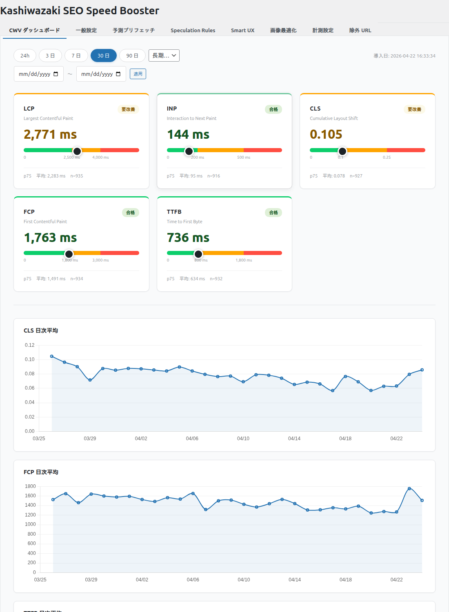

計測ダッシュボード
実ユーザーの Core Web Vitals データを自動収集し、管理画面でグラフやCSVエクスポートで確認できます。
このページの内容
計測ダッシュボードの概要
計測ダッシュボードは、サイトを訪問する実ユーザーのブラウザから Core Web Vitals (LCP / INP / CLS / FCP / TTFB) のデータを収集し、WordPress管理画面で可視化する機能です。Google の web-vitals.js ライブラリ (v4.2.4) を使用してブラウザから直接メトリクスを取得し、REST API 経由でサーバーに送信します。
ダッシュボード画面

収集されるメトリクス
本プラグインは独自の計測アルゴリズムを持ちません。Google が公開しているオープンソースライブラリ web-vitals.js (v4.2.4) を使用し、ブラウザのネイティブ API (PerformanceObserver) 経由で各メトリクスを取得しています。
| メトリクス | 正式名称 | 何を測っているか | ブラウザ API | 単位 | 上限値 | 良好な値 |
|---|---|---|---|---|---|---|
| LCP | Largest Contentful Paint | ビューポート内で最も大きい画像・テキストブロックが描画完了するまでの時間 | PerformanceObserver('largest-contentful-paint') |
ms | 60,000 | ≤ 2,500ms |
| FCP | First Contentful Paint | 最初のテキストまたは画像が画面に描画されるまでの時間 | PerformanceObserver('paint') の first-contentful-paint エントリ |
ms | 60,000 | ≤ 1,800ms |
| INP | Interaction to Next Paint | ユーザー操作（クリック・タップ・キー入力）から次のフレームが描画されるまでの最大遅延 | PerformanceObserver('event') の duration |
ms | 60,000 | ≤ 200ms |
| CLS | Cumulative Layout Shift | ページ表示中に発生したレイアウトシフト（要素の位置ずれ）のスコア累積値。セッションウィンドウ方式で計算 | PerformanceObserver('layout-shift') |
スコア | 50 | ≤ 0.1 |
| TTFB | Time to First Byte | ナビゲーション開始（リクエスト発行）からサーバーのレスポンス最初の 1 バイトを受信するまでの時間 | PerformanceObserver('navigation') の responseStart |
ms | 60,000 | ≤ 800ms |
上限値を超えるデータは異常値とみなされ、自動的に記録されません。通常の利用では上限に達することはありません。
ノート
これらのブラウザ API は Chromium ベースのブラウザ（Chrome / Edge / Opera 等）でサポートされています。Firefox や Safari では一部のメトリクス（INP・CLS 等）が取得できない場合があります。web-vitals.js は API が利用できないブラウザでは自動的にスキップするため、エラーにはなりません。
ダッシュボードの機能
期間フィルタ
- 7日間 / 30日間 / 90日間の3つの期間から選択可能
- 管理画面上のリンクで期間を切り替え（サーバーサイドでデータ取得・描画）
時系列グラフ
- 日別の平均値を折れ線グラフ（SVG）で表示
- 5つのメトリクス（LCP / INP / CLS / FCP / TTFB）それぞれの推移を確認可能
LCP 低速 URL TOP 20
- LCP の平均値が高い URL パスをランキング表示
- 改善が必要なページの特定に役立ちます
CSV エクスポート
- 選択した期間のデータをCSVファイルでダウンロード
- UTF-8 BOM付き（Excel対応）
- CSV インジェクション対策済み（危険な先頭文字のエスケープ）
データ削除（パージ）
- 指定日数より古いデータを一括削除（デフォルト: 90日、最小: 1日）
manage_options権限とnonce検証が必要- 設定履歴は最大100件まで自動保持
データ収集の仕組み
データ収集は以下の3つのステップで行われます。
1. トークン埋め込み（サーバーサイド）
- PHP 側でページ生成時に HMAC-SHA256 トークンを計算し、
wp_add_inline_scriptでインラインスクリプトとして HTML に埋め込みます - トークンは日次ローテーション（
intdiv(time(), DAY_IN_SECONDS)でバケット計算） - トークン取得のための追加 API リクエストは発生しません
2. メトリクス計測と送信（ブラウザサイド）
- web-vitals.js の
onLCP/onFCP/onINP/onCLS/onTTFBコールバックで各メトリクスを収集 - ユーザーがページを離れるとき（
visibilitychange→hidden/pagehide）にバッファ内のメトリクスを一括送信 - 送信には
navigator.sendBeaconを優先使用し、利用できない場合はfetch（keepalive: true）にフォールバック - REST API (
/wp-json/wpsb/v1/metrics) に POST リクエスト - 1リクエストに最大10件のメトリクスを含められます（1ページビューでは通常5件 = 5指標）
3. サーバー側のバリデーション
- Same-Origin チェック（Origin / Referer ヘッダー）
- HMAC トークン検証（当日のバケットと前日のバケットの両方を許可し、日付変更前後の送信も受理）
- ペイロードサイズ制限（4KB 以下）
- メトリクス名・値の範囲チェック（許可名: LCP / INP / CLS / FCP / TTFB のみ）
- IP + 匿名ハッシュベースのレート制限（90秒あたり20リクエスト）
ノート
匿名ハッシュはプライバシー保護のために使用されます。個人を特定する情報は収集されません。
URL パスの正規化
計測データの URL パスは自動的に正規化されます:
/author/{name}/→/author/:author//members/{id}/→/members/:user//users/{id}/→/users/:user/- 3桁以上の連続数字 →
:id（例:/product/12345/reviews/→/product/:id/reviews/）
これにより、類似ページが個別にカウントされることを防ぎます。正規化は wpsb_normalize_path フィルタでカスタマイズできます。
ヒント
URL パスの正規化をカスタマイズしたい場合は、wpsb_normalize_path フィルタを使用できます。最初の引数が null 以外の文字列を返すと、デフォルトの正規化は行われません。
プライバシーと Cookie
計測機能は訪問者の識別のために以下の Cookie を使用します:
| 項目 | 内容 |
|---|---|
| Cookie 名 | wpsb_visitor |
| 内容 | 32文字のランダムなハッシュ値（個人を特定する情報は含みません） |
| 有効期間 | 30日間（デフォルト、設定画面の「Cookie 保持日数」で変更可能） |
| 属性 | SameSite=Lax、HTTPS 環境では Secure 属性付き |
| 目的 | 同一ブラウザからの重複計測を防止するための訪問者識別 |
注意
この Cookie は GDPR や各国の Cookie 規制の対象になる場合があります。計測機能を有効にする場合は、プライバシーポリシーに wpsb_visitor Cookie の使用目的と有効期間を明記することを推奨します。
セキュリティ
計測ダッシュボードでは以下のセキュリティ対策を実施しています:
- HMAC-SHA256 ローリングトークン認証（日次ローテーション、前日分も許可）
- Same-Origin 検証（Origin / Referer ヘッダー）
- ペイロードサイズ制限（4KB）
- IP + 匿名ハッシュベースのレート制限（90秒間に20リクエスト）
- メトリクス値の範囲バリデーション（許可されたメトリクス名と上限値チェック）
- ダッシュボード API は
manage_options権限が必要 - CSV エクスポート・データ削除は nonce 検証必須